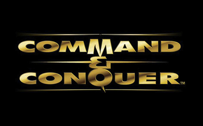
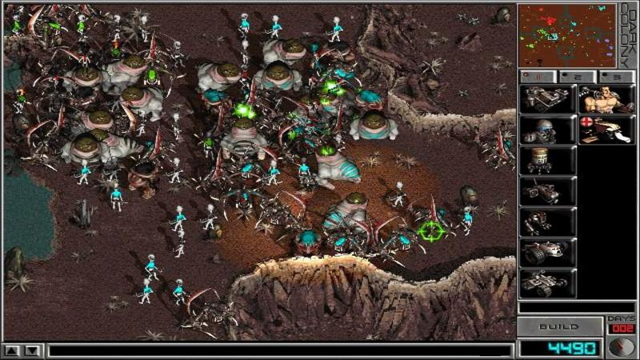

Historia gier RTS
Złota era gier RTS przypadła na ostatnią dekadę ubiegłego stulecia i pierwszą obecnego. Seria Command & Conquer, Total Annihilation, Warcraft, Dark Colony. To tylko kilka tytułów święcących tryumfy w czasach, gdy co trzecia gra na sklepowych półkach była strategią czasu rzeczywistego. I choć dzisiaj gatunek znikł z gamingowego mainstreamu, zdołał się zapisać się złotymi zgłoskami w historii branży gier wideo.
 
Gatunek RTS wywodzi się z gier strategicznych wykorzystujących turowy model rozgrywki,
polegający na tym, iż ruchy graczy zaangażowanych w rozgrywkę następują jeden po drugim.
Najczęściej gracz wykonujący ruch ma nieograniczony czas na przemyślenie, wykonanie i
zatwierdzenie swojej kolejki, choć zdarzają się też tytuły, w których funkcjonują
liczniki czasu. Sztandarowym przykładem strategii turowych jest seria Heroes of Might and Magic.
RTS-y rezygnowały z popularnych wówczas tur na rzecz czasu rzeczywistego. Wszystkie
walczące ze sobą frakcje wykonują swoje ruchy symultanicznie. W ten sposób rozgrywka
nabierała na dynamice, o jej przebiegu nie przesądzało już wyłącznie planowanie strategiczne;
istotne znaczenie zaczęła mieć również umiejętność improwizacji i szybkiego reagowania na
wydarzenia dziejące się na mapie.
Inną cechą charakterystyczną dla RTS-ów jest zbieranie surowców i stawianie budynków, za
pośrednictwem których możliwe jest chociażby rekrutowanie jednostek bojowych.